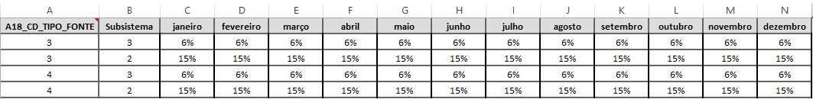
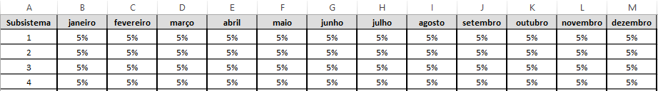
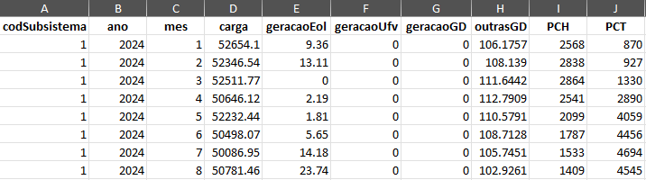

O Balanço de Potência é executado principalmente a partir de alguns arquivos de entrada e de saída de uma simulação completa do NEWAVE. Além desses dados, são necessários também alguns outros arquivos com informações complementares sobre características das fontes não despacháveis (dadosOFR.xlsx, GeraPeq.xlsx e expansão.txt).
Para um caso NEWAVE
• Após simulação do caso NEWAVE que será objeto de análise, deve-se utilizar o software de impressão de saídas NWLISTOP para obter as seguintes saídas por Reservatório Equivalente de Energia (REE): Geração hidráulica total (acrônimo ghtot), energia armazenada final em percentual do armazenamento máximo (acrônimo earmfp), vertimento turbinável fio d'água (acrônimo vertturb) e geração térmica por classes e total do subsistema (acrônimo gtert) de acordo com o tipo de séries de entrada da simulação realizada - séries históricas ou sintéticas.
• O balanço de ponta identifica automaticamente o tipo de simulação através do arquivo de dados gerais (dger.xxx) do NEWAVE. Portanto, deve-se garantir que o campo "TIPO SIMUL. FINAL" do arquivo esteja preenchido corretamente (1: série sintética; 2: série histórica).
• O diretório onde se localiza o caso deve conter o arquivo relatório de saída da simulação completa (relat para o caso do PDE). Esse arquivo não pode ser o gerado apenas por rodada de simulação final, mas sim de simulação completa.
• É importante verificar o espaçamento e a tabulação do arquivo exph. Caso contrário, podem ocorrer problemas de leitura pela ferramenta.
• A informação de carga, presente no arquivo sistema.xxx, deve apresentar dados para todos os subsistemas (mesmo que com valor zerado)
• Arquivo dadosOFR.xlsx: Possui as contribuições das renováveis não despachadas para a ponta, o valor percentual das reservas de carga por subsistema e mês e o valor percentual da reserva por motivo da variabilidade das fontes renováveis. O arquivo possui seis abas: FatorPonta, RelacaoIndicativas, SazonalidadeIndicativas, TipoContribuicaoPonta, ReservaRenovavel e Reserva. Este arquivo deve estar presente na mesma pasta dos arquivos do caso, indicada na interface da ferramenta.
• FatorPonta: Nessa aba ficam os fatores de contribuição mensal para potência informados em função da potência instalada da fonte. É utilizado para fontes em que há uma contribuição específica para potência (fonte do tipo 1). Vale destacar que a coluna A18_CD_TIPO_FONTE se refere ao código do bloco de usinas não simuladas definida no arquivo patamar.* e seu valor deve estar coerente com o definido no arquivo.

• RelacaoIndicativas: Nessa aba ficam os dados de agrupamento das fontes referentes ao cabeçalho do arquivo saidaExpansao.txt (nome das fontes), oriundo do MDI. Os campos TipoFonte e NomeFonte devem seguir o formato do MDI. O campo TipoFonte corresponde ao campo A18_TX_DESCRICAO da aba TipoContribuicaoPonta e eles devem se manter coerentes. O campo NomeFonte deve seguir o campo de mesmo nome na aba SazonalidadeIndicativas.

• SazonalidadeIndicativas: Nessa aba ficam os dados de sazonalidade média mensal das fontes indicativas da expansão.

• TipoContribuicaoPonta: Nessa aba ficam as indicações do tipo de contribuição de potência das fontes. A disponibilidade de potência pode ser informada a partir de uma sazonalidade média mensal da sua geração (fontes do tipo 2), ou uma contribuição mensal específica informada em função da potência instalada (fontes do tipo 1). Para os casos do tipo 1, o fator de contribuição de potência em função da capacidade instalada deve ser incluído na aba FatorPonta. As informações referentes à contribuição sazonal média mensal das usinas indicativas ficam na aba SazonalidadeIndicativas. O campo A18_TX_DESCRICAO corresponde ao campo TipoFonte da aba RelacaoIndicativas e deve se manter coerentes no mesmo formato do MDI. O campo A18_CD_TIPO_FONTE se refere ao código do bloco de usinas não simuladas definida no arquivo patamar.* e seu valor deve estar coerente com o definido no arquivo. A contribuição de potência das fontes tipo 2 será aquela definida para o patamar de carga de número 1 do arquivo patamar.*

• ReservaRenovavel: Nessa aba ficam os dados da reserva por motivo da variabilidade das fontes renováveis. Este dado é o percentual da expectativa de geração da respectiva fonte por subsistema e mês. O campo A18_CD_TIPO_FONTE se refere ao código do bloco de usinas não simuladas definida no arquivo patamar.* e seu valor deve estar coerente com o definido no arquivo.

• Reserva: Nessa aba ficam os dados da reserva em função da carga. Os valores são percentuais relativos aos subsistemas e mês.

• Arquivo GeraPeq.xlsx: Planilha excel contendo a geração sazonalizada das fontes não simuladas (pequenas). Os dados devem estar na aba de nome "Principal". Este arquivo deve estar presente na mesma pasta dos arquivos do caso quando a execução do BP for do tipo "Demanda Determinística". O campo TIPO deste arquivo corresponde ao campo A18_TX_DESCRICAO da aba TipoContribuicaoPonta e ao campo TipoFonte da aba RelacaoIndicativas, ambas da planilha dadosOFR.xlsx. O campo NOME corresponde ao campo NomeFonteMDI da aba RelacaoIndicativas da planilha dadosOFR.xlsx.

• Arquivo detalhesCargaLiquida.xlsx: Planilha excel contendo informações sobre a geração das fontes não simuladas e geração distribuída. Este arquivo deve estar presente na mesma pasta dos arquivos do caso quando a execução do BP for do tipo "Demanda Líquida". As colunas necessárias nesta planilha são: codSubsistema, ano, mes, carga, geracaoEol, geracaoUfv, geracaoGD, outrasGD, PCH e PCT

• Arquivo saidaExpansao.txt: Arquivo texto com a expansão indicativa do MDI. Este arquivo é um arquivo de saída do MDI. Este arquivo deve estar presente na mesma pasta dos arquivos do caso, pois será utilizado para a identificação do montante de expansão de usinas não simuladas no NEWAVE.
• Arquivo infoMDI.txt: Arquivo texto com informações sobre o caso de expansão executado pelo MDI. Este arquivo é um arquivo de saída do MDI. Este arquivo deve estar presente na mesma pasta dos arquivos do caso.
Após o preenchimento de todos os dados de entrada no painel “Balanço de Potência” e a solicitação de execução da aplicação através do botão “Calcula Balanço de Potência”, a ferramenta inicia sua execução com a leitura dos dados de entrada e saída do NEWAVE, das planilhas adicionais e do arquivo com as expansões do MDI. Este processo executa as seguintes etapas:
- Efetua a leitura dos dados gerais e da configuração hidráulica (pacote leitorrmpe) a fim de definir a quantidade de cenários que serão utilizados na execução do BP. A definição segue o campo "TIPO SIMUL. FINAL" do arquivo dger.d* de dados gerais (1: série sintética; 2: série histórica)
- Grava tabela BPO_A01_CASOS_ANALISE com os dados de entrada definidos pelo usuário na interface
- Grava a tabela BPO_A02_SUBSISTEMAS a partir do arquivo sistema.d* (via pacote leitorrmpe)
- Grava a tabela BPO_A02_REES a partir da leitura do arquivo ree.d* e de valores do tipo de cálculo de potência passados pelo usuário
- Grava dados das usinas hidráulicas originalmente nos arquivos confhd.* e hidr.* na tabela BPO_A03_DADOS_UHE do banco de dados do balanço de potência usando funções do pacote leitorrmpe
- Faz a gravação dos dados referentes aos conjuntos e maquinas das usinas hidráulicas do NEWAVE no banco de dados do balanço de potência. Os dados são gravados na tabela BPO_A04_MAQUINAS_UHE usando funções do pacote leitorrmpe
- Faz a gravação dos dados das usinas hidráulicas ao longo do horizonte de simulação do NEWAVE na tabela BPO_A05_DADOS_VIGENTES_UHE usando funções do pacote leitorrmpe
- Grava dados de armazenamento, vertimento turbinável e geração das usinas hidráulicas originalmente nos arquivos earmfpXXX.out, verturbXXX.* e ghtotXXX.out na tabela BPO_A06_SAIDA_HIDRO_NEWAVE usando funções do pacote leitorrmpe
- Faz a gravação dos dados de demanda de ponta do NEWAVE, a partir dos arquivos sistema.d* e patamar.d*, na tabela BPO_A10_DEMANDA usando funções do pacote leitorrmpe
- Faz a gravação dos dados dos limites de intercambio ao longo do horizonte de simulação do NEWAVE na tabela BPO_A11_INTERCAMBIOS usando funções do pacote leitorrmpe
- Faz a gravação dos dados de limite de agrupamento dos intercâmbios do NEWAVE na tabela BPO_A12_LIMITE_AGRUPAMENTOS_INTERCAMBIO usando funções do pacote leitorrmpe
- Faz a gravação dos dados de agrupamento dos intercâmbios do NEWAVE na tabela BPO_A15_AGRUPAMENTOS_INTERCAMBIO usando funções do pacote leitorrmpe
- Faz a gravação dos dados das usinas termelétricas ao longo do horizonte de simulação do NEWAVE nas tabelas BPO_A14_DISPONIBILIDADE_UTE e BPO_A14B_DISPONIBILIDADE_UTE_GNL usando funções do pacote leitorrmpe
- Faz a gravação dos dados de disponibilidade das outras fontes renováveis do NEWAVE na tabela BPO_A13_DISPONIBILIDADE_OFR. Além disso, grava as tabelas de apoio BPO_A18_TIPOS_OFR e BPO_A19_FATOR_PONTA_OFR.
- Neste ponto, a planilha GeraPeq.xslx ou detalhesCargaLiquida.xslx são pesquisadas na pasta de arquivos do NEWAVE indicada pelo usuário, de acordo com o tipo de execução escolhida (demanda líquida ou determinística).
- Também é buscada a planilha dadosOFR.xlsx, que deve possuir as abas "FatorPonta", "RelacaoIndicativas", "SazonalidadeIndicativas", "TipoContribuicaoPonta".
- Salva as informações da aba TipoContribuicaoPonta na tabela BPO_A18_TIPOS_OFR
- Salva as informações da aba FatorPonta na tabela BPO_A19_FATOR_PONTA_OFR
- Sendo um caso de PDE, processa informações das renováveis indicativas, juntando as expansões indicadas no arquivo saidaExpansao.txt com a Sazonalidade das Indicativas da aba “SazonalidadeIndicativas” através da conversão de códigos definida na aba “RelacaoIndicativas”
- Finalmente, calcula a disponibilidade de ponta das usinas não simuladas, para cada período do horizonte de simulação, avaliando o tipo de contribuição da ponta atribuído. Se A18_TP_CONTRIBUICAO_PONTA = 2 para a determinada fonte, a disponibilidade será igual a Energia x profundidade (definida no arquivo patamar.d*), caso contrário, a disponibilidade será igual a Potência Instalada x Fator de contribuição (definido na tabela BPO_A19_FATOR_PONTA_OFR). A disponibilidade será gravada na tabela BPO_A13_DISPONIBILIDADE_OFR
- Faz o cálculo e a gravação dos dados de reserva em função da carga e em função da potência instalada de renováveis na tabela BPO_A21_RESERVA
Passada a gravação dos dados de entrada, se inicia o cálculo da disponibilidade hidráulica e atualização e gravação das tabelas BPO_A06_SAIDA_HIDRO_NEWAVE, BPO_A08_DADOS_CALCULADOS_UHE e BPO_A09_DISPONIBILIDADE_HIDRO_PONTA_SUBSISTEMA
- Atualiza a informação de submotorização da tabela BPO_A06_SAIDA_HIDRO_NEWAVE com dados de submotorização por REE (relat.d*)
- Pega a informação das usinas do tipo 1 (que modulam) para cálculo de disponibilidade
- Calcula o volume operativo por usina como: (volume máximo por usina – volume mínimo por usina) * armazenamento percentual por REE + volume mínimo por usina
- Atualiza a geração hidráulica por REE original da BPO_A06_SAIDA_HIDRO_NEWAVE somando-se a submotorização do respectivo REE
- Calcula a cota operativa a partir do volume operativo e do polinômio cota-volume
- Calcula a altura de queda líquida como: cota operativa - canal de fuga médio - perdas
- Calcula a potência máxima por usina como: número de máquinas * potência unitária * (1 - TEIF) * (1 - IP). Para os conjuntos onde a altura de queda líquida é menor que a altura de referência do conjunto, a potência será um percentual da máxima, calculado a partir da razão: (altura de queda líquida/altura de referência do conjunto)^coeficiente da turbina
- Calcula a geração hidráulica por usina, através do rateio da geração hidráulica de cada REE, de acordo com os valores de potência máxima disponível de cada usina, sendo que a geração hidráulica de cada REE já é abatida da geração hidráulica mínima, priorizando assim o atendimento à essa restrição: geração hidráulica por usina = geração hidráulica mínima por usina + ((geração hidráulica por REE - geração hidráulica mínima por REE) * ((potência máxima por usina - geração hidráulica mínima por usina)/( potência máxima por REE - geração hidráulica mínima por REE)))
- Realiza consistência do total de geração hidráulica mínima. Se encontrar valor de geração hidráulica mínima por REE maior que o geração hidráulica por REE, ajusta os dados de todas as usinas do respectivo REE: geração hidráulica mínima por usina = geração hidráulica mínima por usina * (1 - (geração hidráulica mínima por REE - geração hidráulica por REE) / geração hidráulica mínima por REE)
- Calcula a potência modulada por: ((geração hidráulica por usina * 730.5) - (geração hidráulica mínima por usina * (730.5 – quantidade de horas de ponta))) / quantidade de horas de ponta
- Ajusta potência máxima de Tucurui definida na ferramenta (codigo da usina = 275, cota limite de 62 metros e potência limite de 4000 MW)
- Grava tabela BPO_A08_DADOS_CALCULADOS_UHE
- Agrega disponibilidade de potência das usinas por REE
- Calcula a disponibilidade hidráulica máxima na ponta para os REEs que modulam de acordo com tabela. A tabela relaciona valores de vazão com geração hidráulica. Para valores de vazão entre pontos da tabela é realizada uma interpolação. Atualmente a tabela está armazenada internamente no pacote e possui dados para os REE de Itaipu e Belo Monte. Os dados da tabela são apresentados na figura abaixo:

- Calcula a disponibilidade hidráulica máxima na ponta para os REEs que não modulam (usinas a fio d’água com forte sazonalidade) como a expectativa média de geração somada ao vertimento turbinável fio d’água e submotorização. Dados encontrados na tabela BPO_A06_SAIDA_HIDRO_NEWAVE
- Agrega as disponibilidades hidráulicas dos REE que modulam, com os que modulam por tabela e com os que não modulam e grava a tabela BPO_A09_DISPONIBILIDADE_HIDRO_PONTA_SUBSISTEMA
Findado o cálculo da disponibilidade hídráulica, se inicia a organização e cálculo dos balanços de energia para cada série hidráulica.
- Estrutura todos os dados de geração no formato: anoMes, tipoUsina, codUsina, subsistema, transmissão, inflexibilidade, disponibilidade e cvu. Onde anoMes é o ano e mês de ocorrência da geração; tipoUsina é a definição de usina, como: "TERMICA", "HIDRO", "RENOVAVEIS", "DEFICIT"; codUsina conforme NEWAVE; subsistema é o subsistema da usina; transmissão é um indicador se é um gerador real (valor 0), ou uma linha de transmissão com seu código específico; inflexibilidade como a geração mínima; disponibilidade como a geração máxima; e cvu como o custo da geração
- Na estruturação do DEFICIT, ele é modelado em duas etapas, a primeira como uma usina virtual para cada subsistema com disponibilidade de geração igual a x% da demanda de cada subsistema (definido na tela de dados de entrada) e cvu igual ao custo do déficit. Na segunda etapa, uma usina virtual é adicionada por subsistema com disponibilidade de geração muito elevada (999.999) e cvu igual ao custo do déficit * 1.01. Dessa forma, durante a resolução do problema de programação linear, o solver tentará distribuir os déficits entre os subsistemas até um determinado valor e depois seguirá para gerar déficits de forma não uniforme. Essa solução não altera o despacho da geração, somente tenta encontrar uma outra solução usando possíveis espaços em transmissão para distribuir os déficits entre os subsistemas.
- Estrutura todos os dados das linhas de transmissão de forma similar ao de um gerador, contudo, o campo tipoUsina passa a receber "TRANSMISSAO", o codUsina recebe o subsistema de origem ou de destino (toda a linha é cadastrada duas vezes, uma como gerador na origem e outra no destino), o campo transmissão recebe um código que representa a linha, podendo ser SUBSISTEMA ORIGEM * 1000 + SUBSISTEMA DESTINO, ou SUBSISTEMA ORIGEM * 1000 + SUBSISTEMA DESTINO * -1 para identificar seu gerador equivalente no subsistema de origem ou destino; o campo inflexibilidade recebe o valor mínimo de transmissão e a disponibilidade o máximo da linha. Ao campo cvu é atribuído o valor de 2e-6 para que o modelo não use a transmissão desnecessariamente. Para evitar o problema de fluxo em dois sentidos na linha, ocorrência comum quando se modela a transmissão por tubos em programação linear, as linhas de transmissão foram modeladas como dois geradores fictícios, um de valor positivo no subsistema de recebimento e um de valor negativo no subsistema de envio, com uma restrição adicional da soma destes valores ser igual a zero;
- São organizados os agrupamentos de linhas e suas restrições de acordo com os novos códigos estabelecidos das linhas
- Estrutura os valores da demanda no horizonte de estudos, assim como a reserva. Estes se tornarão uma restrição de igualdade no problema linear (PL)
- Com a estrutura base para se montar os PLs, faz-se uso de processamento paralelo para resolver cada problema. Além do problema completo, com transmissão, também é criado um problema sem essa restrição para eventual análise
- Os resultados são gravados nas tabelas BPO_A16_BALANCO, BPO_A17_BALANCO_GERADOR e BPO_A20_BALANCO_SUBSISTEMA. Na tabela BPO_A16_BALANCO são gravados os balanços para cada mês, ano e série hídrica de forma agregada por subsistema. A tabela BPO_A17_BALANCO_GERADOR receberá as mesmas informações da tabela anterior, contudo, desagregada por gerador (essa tabela só será gravada se o usuário selecionar essa necessidade na tela de navegação da ferramenta). A tabela BPO_A20_BALANCO_SUBSISTEMA apresenta a solução dual do problema, no caso, os CMOs. Por fim, As tabelas BPO_A21 a BPO_A30 apresentam as métricas utilizadas para o cálculo dos requisitos de potência pela EPE.
- Um arquivo em formato excel com o nome resumoSaidasBP.xlsx, contendo as principais saídas da ferramenta, é criado no mesmo diretório onde está armazenada a BD.